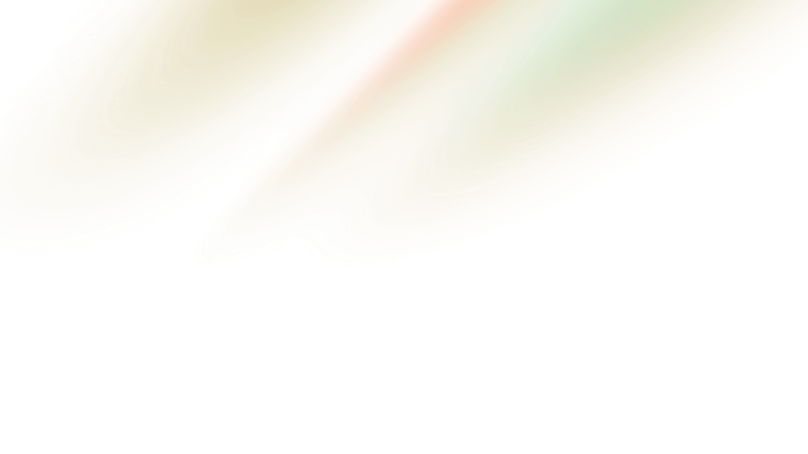

James W


About Me
I am a recent graduate with a Bsc in Software Engineering from Swansea University. I like working on projects in my spare time, you can find some of them here.
Projects
Some of the projects I have worked on both in university and as side-projects. You can find more of my projects on my github.

Gregynog Game Jam
Game created in two days for the Swansea University Gregynog Game Jam. The theme was "A Method to Decide the next Prime Minister"

Scorched Earth
A game in the style of the MS-DOS classic "Scorched Earth" created in unity using the State Machine Pattern for turns.

Laravel Forum
A simple forum-like website made using Laravel, Livewire, and TailwindCSS. It has basic forum features such as user accounts, posts and replies.